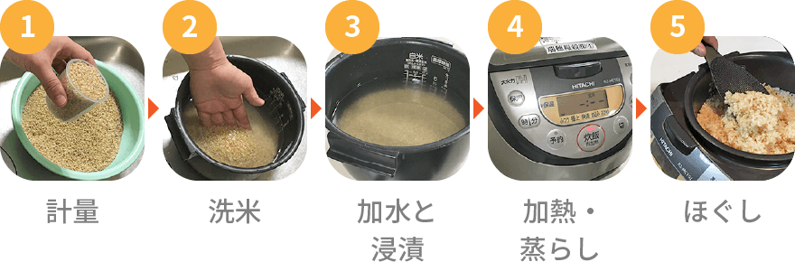
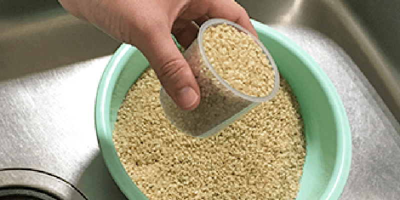
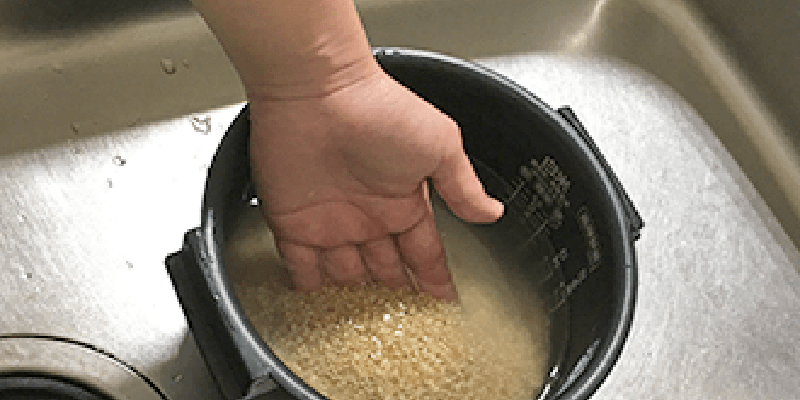
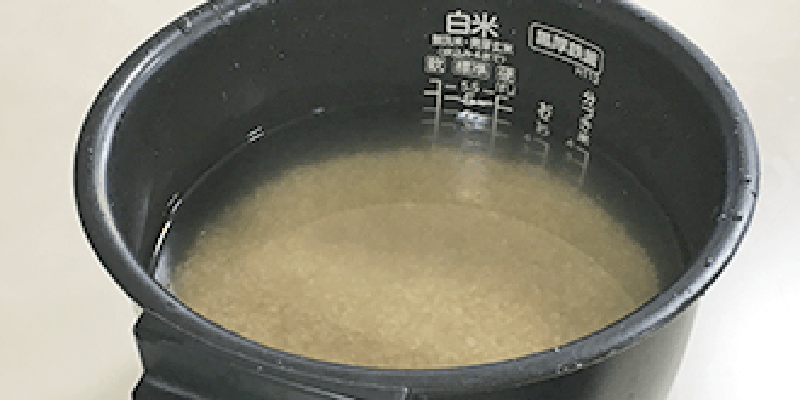
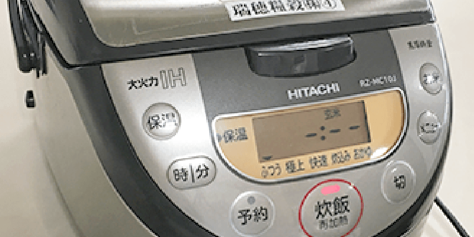
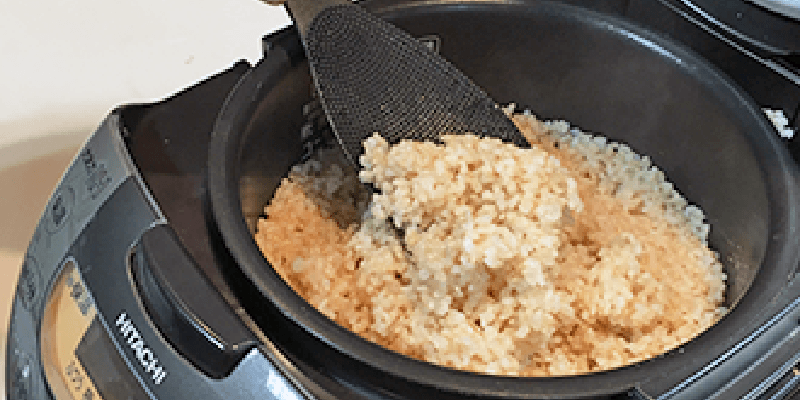

玄米の炊き方

食生活における健康志向がトレンドとなり、雑穀類やスーパーフード等の栄養価が高くて身体に良い食べ物が注目を集めています。日本では古くから、お米を玄米のまま炊いて食べるという食べ方があります。
玄米は身体に良い栄養成分が豊富に含まれており、日本を代表する伝統的な健康食なのです。しかし、玄米をそのまま炊いて食べるには少しコツが必要で、炊き上がりが硬くて食べにくい、どうやって炊いたらおいしく食べられるのか、といった内容のお問合せのお電話も増えてきました。
ここでは、玄米を上手に炊く手順をちょっとしたコツも踏まえながらご説明致します。
1. 計量

計量については白米の時と同じですが、やはり正確に測ることが大事です。
計量カップのちょうど摺り切り一杯を測り入れます。
一杯が約150gになりますが、 はかりがあれば重量を正確に測ることをオススメします。
2. 洗米

玄米に水を加えたら、手早く2～3回かき回し、すぐに水を捨てます。
玄米は収穫した稲をもみすりしたままの状態で搗精（ヌカを取り除く工程）の工程を経ていないので、
白米と比べるとチリやホコリなどが多く付着している場合があります。
ただ、ヌカを取り除く必要がない上に、ホコリ等は水で軽くすすぐ程度で除去できますので、気になる方は白米と同じように
1～2回程度洗米しても良いですが念入りにする必要はありません。
よりふっくら柔らかく炊きたいという方は、少し強めに洗米して炊く方法も試してみて下さい。
お米の表面にわざとキズをつけることにより、吸水がスムーズになり、炊き上がりがより柔らかになります。
3.加水と浸漬

玄米を炊く際には加える水加減が非常に重要となってきますが、これは炊き上がりの好みによって大きく変わってきます。
一般的にはお米の重量に対して
1.5倍～2倍くらいの量が良いとされています。
まずは、炊飯器の目盛りに合わせて炊いてみて、その炊き上がりの具合を見ながら次回からお好みで水の量を調節するのが良いでしょう。
浸漬時間については、玄米の場合白米と違ってヌカ層がある分、
吸水にそれなりの時間がかかります。
約6時間程度たっぷりととれるといいですが、できれば冬場はもっと長めに8時間くらいとれることが望ましいです。
十分に吸水が行われなければ、硬く食べにくい炊き上がりになってしまいます。
注意すべきところは、夏場の水についてです。
夏場は気温の関係で水が傷みやすいので、長めに浸漬時間をとる場合には水を替える必要があります。
例えば、朝にごはんが炊き上がるようにタイマーを設定し、前日の夜に仕掛けておく場合、夜間の気温によっては水が傷んでしまい、そのまま炊飯してしまうと変な臭いがしたりすることがあります。
面倒でも、浸漬の途中かあるいは炊飯のスイッチを入れる前に水を替えることをオススメします。
4.加熱・蒸らし

最近のほとんどの炊飯器には、玄米炊きモードが搭載されています。
メーカーによって仕様が異なりますので、説明書に従って炊飯を行ってください。
炊飯スイッチを入れる前に塩をひとつまみ入れると
炊き上がりがよりふっくらします。
蒸らし時間については、白米炊きモードと同様に炊飯器のプログラムに含まれていますが、よりふっくらさせたいという方は、
さらに10分～20分蒸らし時間をとってみても良いでしょう。
5. ほぐし

ほぐしの作業は白米のときと同じです。
米粒表面の余分な水分を飛ばすため、全体を切るようにほぐします
米粒を潰さないように気を付けて下さい。
玄米はそのまま炊いても硬くて食べにくい、苦みがあっておいしくない、といったイメージが強いですが、上手に炊くことができれば十分おいしく食べられます。
上記の通り浸漬時間や水分量に加えて、研ぎ方や蒸らし時間など、それぞれ工夫できるポイントがたくさんありますので、ご家庭に合った炊き方を探してみて下さい